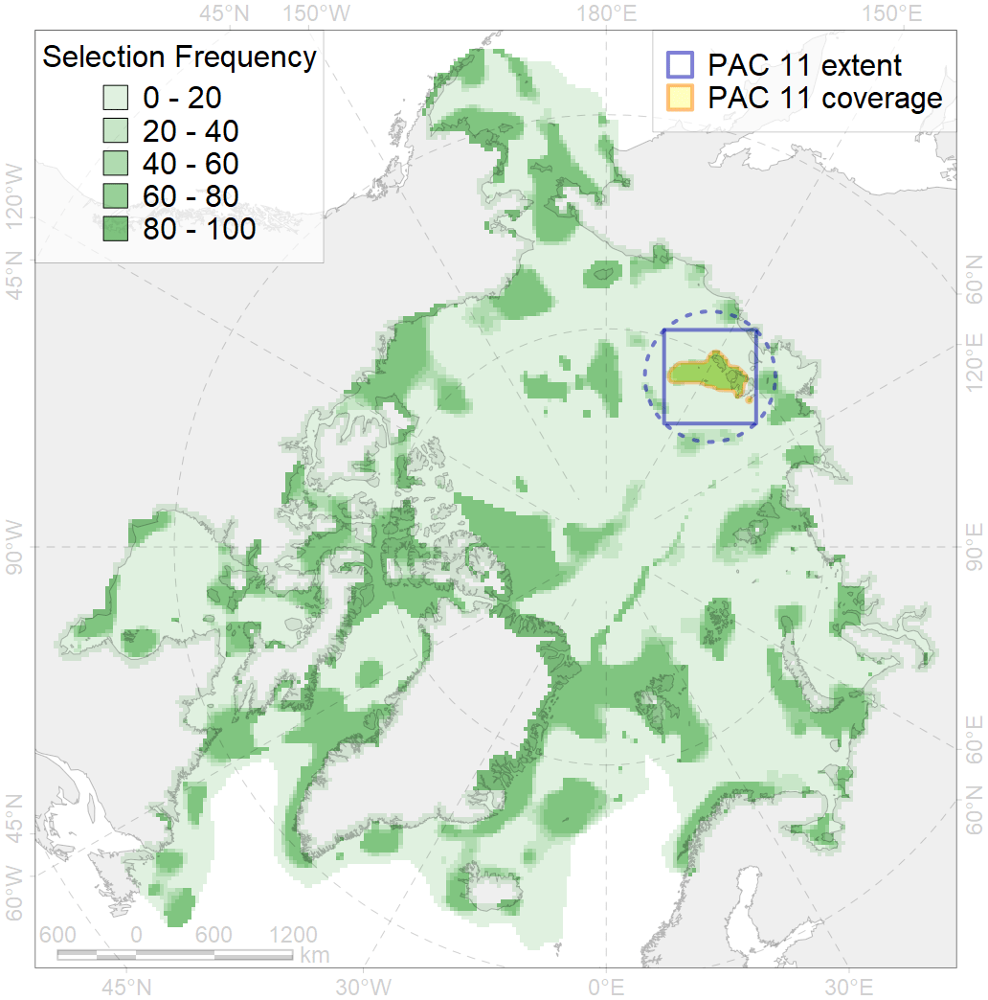
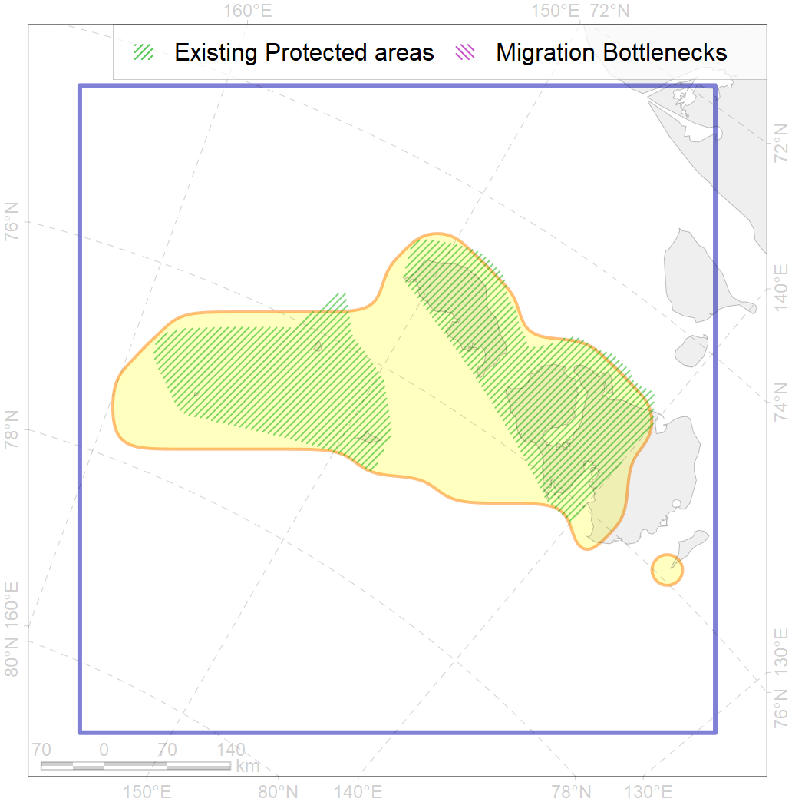

11
For more information regarding this PAC and to conduct custom spatial analysis using the PAC data or any spatial query, please consult Accenter.

0
CFs entirely within the PAC area
5
CFs at least 25% within the PAC area
5
CFs with at least 50% of their target achieved in the PAC
11
CFs with at least half of their target achieved in the PAC
| CF ID | CF Name | Proportion in the PAC | Conservation Target | Contribution to ArcNet Target Achievement | PAC’s Contribution to the Achieved Target |
|---|---|---|---|---|---|
| 7007 | New Siberian Islands area of increased benthic biomass | 74.2% | 72.0% | 102.2% | 99.2% |
| 1013 | Laptev Walrus haulouts | 45.7% | 90.0% | 48.1% | 46.0% |
| 6104 | Thick-billed murre (Uria lomvia eleonorae) breeding colonies buffer feeding area | 36.1% | 36.0% | 95.4% | 54.1% |
| 6080 | Thick-billed murre (Uria lomvia eleonorae) breeding colonies | 33.3% | 54.0% | 61.7% | 42.5% |
| 3112 | Polynyas distribution in the Eastern Laptev Sea region | 32.3% | 20.0% | 158.2% | 48.9% |
| 9030 | polar bear denning areas of LV (Laptev Sea) subpopulation | 24.4% | 52.8% | 44.6% | 44.5% |
| 6045 | Stellers eider (Polysticta stelleri) Pacific moulting&migration stopovers | 22.1% | 52.8% | 41.8% | 38.8% |
| 1014 | Laptev Walrus Whelping patches | 17.6% | 24.0% | 71.5% | 30.5% |
| 7105 | II.1.1.14. East Siberian middle shelf | 14.7% | 5.2% | 277.4% | 77.2% |
| 7104 | II.1.1.13. East Siberian iInner shelf | 13.1% | 6.1% | 215.0% | 54.9% |
| 6011 | Brent goose (Branta bernicla nigricans) Asian breeding&moulting grounds | 11.5% | 18.0% | 63.0% | 23.2% |
| 6073 | King eider (Somateria spectabilis) Pacific moulting&migration stopovers | 10.9% | 48.0% | 22.7% | 19.7% |
| 4092 | Estuarian (Indigirka-Kolyma) brackish –water fish complex | 9.6% | 6.0% | 157.3% | 51.6% |
| 3039 | Marginal Ice Zone distribution in July in the Laptev Sea LME | 9.6% | 24.0% | 39.7% | 34.0% |
| 7035 | Siberian shelf region | 8.0% | 8.6% | 92.0% | 26.2% |
| 6100 | Black-legged kittiwake (Rissa tridactyla pollicarius) breeding colonies buffer feeding area | 7.2% | 64.8% | 10.5% | 10.5% |
| 7056 | cold seeps and mud vulcanoes | 7.1% | 75.0% | 9.5% | 9.1% |
| 4077 | Fish zoogeography, Arctic Region, High-Arctic Shelf Province, Laptev – East-Siberian District | 5.5% | 12.0% | 44.4% | 23.5% |
| 7106 | II.1.1.15. East Siberian outer shelf | 5.3% | 9.1% | 44.4% | 38.4% |
| 6066 | Common eider (Somateria mollissima v-nigrum) breeding&moulting grounds | 5.2% | 33.6% | 15.3% | 15.1% |
| 2013 | Bearded seal whelping areas in the Laptev Sea | 4.9% | 24.0% | 19.6% | 9.2% |
| 3008 | Fast ice distribution in the Eastern part of the Laptev Sea and the East-Siberian Sea | 4.8% | 6.0% | 78.1% | 16.8% |
| 4008 | Feeding / nursery area of the Arctic Cisco (Coregonus autumnalis), Eurasian populations | 4.3% | 38.4% | 11.0% | 10.3% |
| 4018 | Feeding area of the Vendace, Least cisco (Coregonus sardinellа), Euro-Asian populations | 3.7% | 24.0% | 15.0% | 7.9% |
| 3058 | Multiyear Ice distribution in September in the East-Siberian Sea LME | 3.5% | 18.0% | 16.5% | 16.4% |
| 2009 | Bearded seal whelping areas in the East-Siberian Sea | 3.5% | 12.0% | 25.3% | 16.9% |
| 7026 | Eurasian shelf region | 2.9% | 8.6% | 30.6% | 12.5% |
| 4036 | Distribution of the Borisov’s Arctic cod (Arctogadus borisovi) | 2.8% | 13.2% | 20.6% | 9.1% |
| 4030 | Feeding area of the Arctic charr (Salvelinus alpinus), anadromous populations | 2.7% | 38.4% | 6.9% | 6.1% |
| 5007 | Beluga of the Barents-Kara-Laptev Sea stock general distribution | 2.4% | 24.0% | 9.6% | 6.4% |
| 3040 | Marginal Ice Zone distribution in July in the East-Siberian Sea LME | 2.2% | 24.0% | 8.4% | 8.4% |
| 9012 | polar bear of the LV (Laptev Sea) subpopulation distribution | 1.9% | 26.4% | 6.9% | 5.7% |